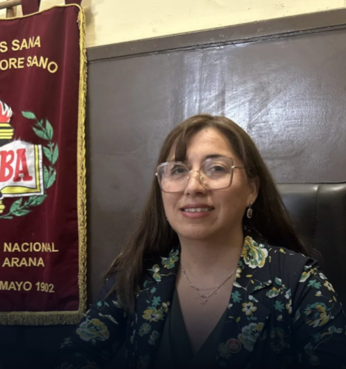

Historia
El Internado Nacional Barros Arana es un liceo público emblemático, laico y de alta trayectoria que funciona ininterrumpidamente desde el 20 de mayo de 1902. Estratégicamente ubicado en Santiago, frente al parque Quinta Normal, ha forjado a lo largo de más de un siglo un aporte invaluable a la educación pública chilena.
Su origen se remonta a la visión del presidente José Manuel Balmaceda, quien en 1887 impulsó la creación de escuelas, liceos e internados públicos para democratizar el acceso educativo, especialmente para alumnos provenientes de regiones alejadas.
En 2006 recibió la distinción de Monumento Histórico Nacional gracias a su excepcional valor arquitectónico y educativo, mientras que en 1995 la Ley 19.373 garantizó su permanencia en la comuna de Santiago tras superar una compleja crisis económica.
Hoy acoge a cerca de 1.800 estudiantes y se mantiene como verdadero bastión de la educación pública, habiendo formado a destacadas figuras como Patricio Aylwin, Nicanor Parra y José Maza.
Misión
Nuestra misión en el Internado Nacional Barros Arana parte desde el ideal de crear estudiantes autónomos y solidarios, ofreciendo oportunidades a jóvenes de todo el país para forjar su carácter con valores como la lealtad y el compañerismo, contribuyendo a su desarrollo personal y social y manteniendo viva una identidad institucional histórica y de excelencia educativa.
Valores
Nuestros valores nacen desde la comunidad, la hermandad y la construcción colectiva, creando en nuestros estudiantes un entorno de solidaridad, responsabilidad y trabajo en equipo, fortaleciendo la participación activa de toda la comunidad educativa.
Directorio

Urbi Rojas Arriáran
Directora

Karina Vera Jaure
Jefa unidad técnica P.

Mauricio Hormazabal
Subdirector

Ana Valenzuela Silva
Inspectora general

Esteban Abarca Vidal
Inspector General

Carmen Cortez Díaz
Convivencia escolar

Flavio Gutierrez F.
Inspector General
¿Quieres formar parte de nuestra comunidad educativa?
Únete a nosotros